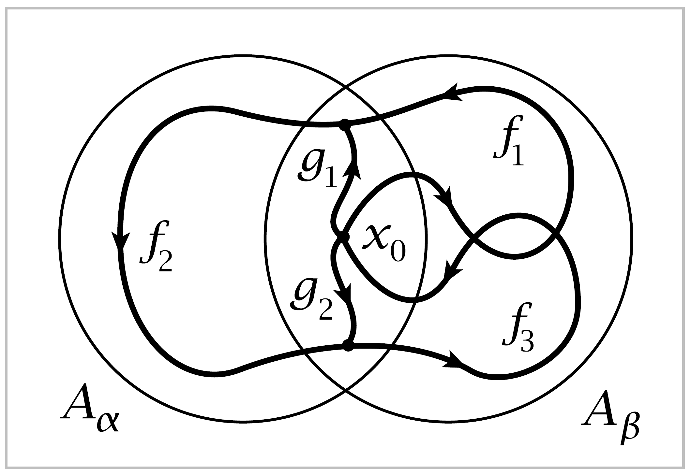
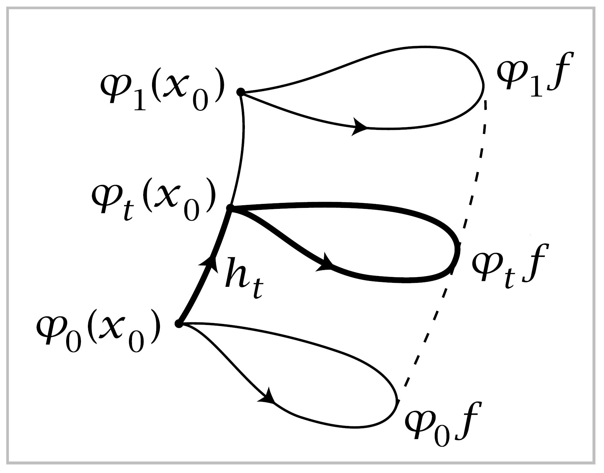
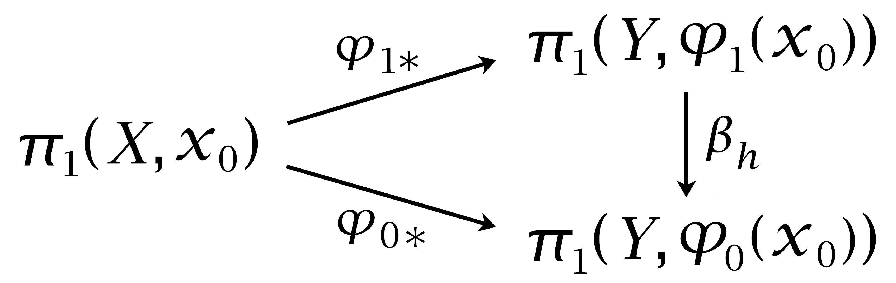

Induced Homomorphisms#
Suppose \(\varphi:X \rightarrow Y\) is a map taking the basepoint \(x_0 \in X\) to the basepoint \(y_0 \in Y\). For brevity we write \(\varphi:(X,x_0)\rightarrow (Y,y_0)\) in this situation. Then \(\varphi\) induces a homomorphism \(\varphi_*: \pi_1(X,x_0) \rightarrow \pi_1(Y, y_0)\), defined by composing loops \(f:I \rightarrow X\) based at \(x_0\) with \(\varphi\), that is \(\varphi_*[f_0]=[\varphi f_0]=[\varphi f_1]=\varphi_* [f_1]\). Furthermore, \(\varphi_*\) is a homomorphism since \(\varphi (f\cdot g)=(\varphi f) \cdot (\varphi g)\), both functions having the value \(\varphi f(2s)\) for \(0 \leq s \leq \frac{1}{2}\) and the value \(\varphi g(2s-1)\) for \(\frac{1}{2} \leq s \leq 1\).
Two basic properties of induced homomorphisms are:
\((\varphi \psi)_* = \varphi_* \psi_*\) for a composition \((X,x_0)\xrightarrow{\psi}(Y,y_0)\xrightarrow{\varphi}(Z,z_0)\).
\(\mathbb{1}_* = \mathbb{1}\), which is a concise way of saying that the identity map \(\mathbb{1}:X\rightarrow X\) induces the identity map \(\mathbb{1}:\pi_1(X,x_0) \rightarrow \pi_1(X,x_0)\).
The first of these follows from the fact that composition of maps is associative, so \((\varphi \psi)f = \varphi(\psi f)\), and the second is obvious. These two properties of induced homomorphisms are what makes the fundamental group a functor. The formal definition of a functor requires the introduction of certain other preliminary concepts, however, so we postpone this until it is needed in §2.3.
As an application we can deduce easily that if \(\varphi\) is a homeomorphism with inverse \(\psi\) then \(\varphi_*\) is an isomorphism with inverse \(\varphi_* \psi_* = (\varphi \psi)_* = \mathbb{1}_* = \mathbb{1}\) and similarly \(\psi _* \varphi_* = \mathbb{1}\). We will use this fact in the following calculation of the fundamental groups of higher-dimensional spheres:
Proposition 1.14. \(\pi_1(S^n)=0\) if \(n \geq 2\).
The main step in the proof will be a general fact that will also play a key role in the next section:
Lemma 1.15. If a space* \(X\) is the union of a collection of path-connected open sets \(A_\alpha\) each containing the basepoint \(x_0 \in X\) and if each intersection \(A_\alpha \cap A_\beta\) is path-connected, then every loop in \(X\) at \(x_0\) is homotopic to a product of loops each of which is contained in a single \(A_\alpha\)
Proof: Given a loop \(f:I \rightarrow X\) at the basepoint \(x_0\), we claim there is a partition \(0=s_0<s_1< \cdots < s_m = 1\) of \(I\) such that each subinterval \([s_{i-1},s_i]\) is mapped by \(f\) to a single \(A_\alpha\). Namely, since \(f\) is continuous, each \(s \in I\) has an open neighborhood \(V_s\) in \(I\) mapped by \(f\) to some \(A_\alpha\). We may in fact take \(V_s\) to be an interval whose closure is mapped to a single \(A_\alpha\). Compactness of \(I\) implies that a finite number of these intervals cover \(I\). The endpoints of this finite set of intervals then define the desired partition of \(I\)
Denote the \(A_\alpha\) containing \(f([s_{i-1},s_i])\) by \(A_i\), and let \(f_i\) be the path obtained by restricting \(f\) to \([s_{i-1},s_i]\). Then \(f\) is the composition \(f_1 \cdot \cdots \cdot f_m\) with \(f_i\) a path in \(A_i\).
{kind=link}
Since we assume \(A_i \cap A_{i+1}\) is path-connected, we may choose a path \(g_i\) in \(A_i \cap A_{i+1}\) from \(x_0\) to the point \(f(s_i) \in A_i \cap A_{i+1}\). Consider the loop \((f_1 \cdot \bar{g}_1) \cdot (g_1 \cdot f_2 \cdot \bar{g}_2) \cdot (g_2 \cdot f_3 \cdot \bar{g}_3) \cdot \cdots \cdot (g_{m-1} \cdot f_m)\) which is homotopic to \(f\). This loop is a composition of loops each lying in a single \(A_i\), the loops indicated by the parentheses. ◻
Proof of Proposition 1.14: We can express \(S^n\) as the union of two open sets \(A_1\) and \(A_2\) each homeomorphic to \(\mathbb{R}^n\) such that \(A_1 \cap A_2\) is homeomorphic to \(S^{n-1} \times \mathbb{R}\), for example by taking \(A_1\) and \(A_2\) to be the complements of two antipodal points in \(S^n\). Choose a basepoint \(x_0\) in \(A_1 \cap A_2\). If \(n \geq 2\) then \(A_1 \cap A_2\) is path-connected. The lemma then applies to say that every loop in \(S^n\) based at \(x_0\) is homotopic to a product of loops in \(A_1\) or \(A_2\). Both \(\pi_1(A_1)\) and \(\pi_1(A_2)\) are zero since \(A_1\) and \(A_2\) are homeomorphic to \(\mathbb{R}^n\). Hence every loop in \(S^n\) is nullhomotopic. ◻
Corollary 1.16. \(\mathbb{R}^2\) is not homeomorphic to* \(\mathbb{R}^n\) for \(n \neq 2\).
Proof: Suppose \(f:\mathbb{R}^2 \rightarrow \mathbb{R}^n\) is a homeomorphism. The case \(n=1\) is easily disposed of since \(\mathbb{R}^2-\{0\}\) is path-connected but the homeomorphic space \(\mathbb{R}^n-\{f(0)\}\) is not path-connected when \(n=1\). When \(n>2\) we cannot distinguish \(\mathbb{R}^2-\{0\}\) from \(\mathbb{R}^n-\{f(0)\}\) by the number of path-components, but we can distinguish them by their fundamental groupos. Namely, for a point \(x\) in \(\mathbb{R}^n\), the complement \(\mathbb{R}^n-\{x\}\) is homeomorphic to \(S^{n-1} \times \mathbb{R}\), so Proposition 1.12 implies that \(\pi_1(\mathbb{R}^n-\{x\})\) is isomorphic to \(\pi_1(S^{n-1}) \times \pi_1(\mathbb{R}) \approx \pi_1(S^{n-1})\). Hence \(\pi_1(\mathbb{R}^n -\{x\})\) is \(\mathbb{Z}\) for \(n=2\) and trivial for \(n>2\), using Proposition 1.14 in the latter case. ◻
The more general statement that \(\mathbb{R}^m\) is not homeomorphic to \(\mathbb{R}^n\) if \(m \neq n\) can be proved in the same way using either the higher homotopy groups or homology groups. In fact, nonempty open sets in \(\mathbb{R}^m\) and \(\mathbb{R}^n\) can be homeomorphic only if \(m=n\), as we will show in Theorem 2.26 using homology.
induced homomorphisms allow relations between spaces to be transformed into relations between their fundamental groups. Here is an illustration of this principle:
Proposition 1.17. If a space \(X\) retracts onto a subspace \(A\), then the homomorphism \(i_*:\pi_1 (A,x_0) \rightarrow \pi_1(X,x_0)\) induced by the inclusion \(i:A \hookrightarrow X\) is injective. If \(A\) is a deformation retract of \(X\), then \(i_*\) is an isomorphism.
Proof: If \(r:X\rightarrow A\) is a retraction, then \(ri=\mathbb{1}\), which implies that \(i_*\) is injective. If \(r_t:X \rightarrow X\) is a deformation retraction of \(X\) onto \(A\), so \(r_0=\mathbb{1},\, r_t|A =\mathbb{1}\), and \(r_1(X) \subset A\), then for any loo \(f:I\rightarrow X\) based at \(x_0 \in A\) the composition \(r_t f\) gives a homotopy of \(f\) to a loop in \(A\), so \(i_*\) is also surjective. ◻
This gives another way of seeing that \(S^1\) is not a retract of \(D^2\), a fact we showed earlier in the proof of the Brouwer fixed point theorem, since the inclusion-induced map \(\pi_1(S^1)\rightarrow \pi_1(D^2)\) is a homomorphism \(\mathbb{Z}\rightarrow 0\) that cannot be injective.
The exact group-theoretic analog of a retraction is a homomorphism \(\rho\) of a group \(G\) onto a subgroup \(H\) such that \(\rho\) restricts to the identity on \(H\). In the notation above, if we identify \(\pi_1(A)\) with its image under \(i_*\), then \(r_*\) is such a homomorphism from \(\pi_1(X)\) onto the subgroup \(\pi_1(A)\). The existence of a retracting homomorphism \(\rho : G \rightarrow H\) is quite a strong condition on \(H\). If \(H\) is a normal subgroup, it implies that \(G\) is the direct product of \(H\) and the kernel of \(\rho\). If \(H\) is not normal, then \(G\) is what is called in group theory the semi-direct product of \(H\) and the kernel of \(\rho\).
Recall from Chapter 0 the general definition of a homotopy as a family \(\varphi_t : X \rightarrow Y,\, t\in I\), such that the associated map \(\Phi : X \times I \rightarrow Y ,\, \Phi(x,t) = \varphi_t(x)\), is continuous. If \(\varphi_t\) takes a subspace \(A \subset X\) to a subspace \(B \subset Y\) for all \(t\), then we speak of a homotopy of maps of pairs, \(\varphi_t : (X,A) \rightarrow (Y,B)\). In particular, a basepoint-preserving homotopy \(\varphi_t:(X,x_0) \rightarrow (Y, y_0)\) is the case that \(\varphi_t(x_0)=y_0\) for all \(t\). Another basic property of induced homomorphisms is their invariance under such homotopies:
If \(\varphi_t:(X,x_0)\rightarrow (Y,y_0)\) is a basepoint-preserving homotopy, then \(\varphi_{0*} = \varphi_{1*}\).
This holds since \(\varphi{0*}[f]=[\varphi_0 f]=[\varphi_1f]=\varphi_{1*}[f]\), the middle equality coming from the homotopy \(\varphi_t f\).
There is a notion of homotopy equivalence for spaces with basepoints. One says \((X, x_0) \simeq (Y,y_0)\) if there are maps \(\varphi : (X,x_0) \rightarrow (Y, y_0)\) and \(\psi : (Y,y_0)\rightarrow (X, x_0)\) with homotopies \(\varphi \psi \simeq \mathbb{1}\) and \(\psi \varphi \simeq \mathbb{1}\) through maps fixing the basepoints. In this case the induced maps on \(\pi_1\) satisfy \(\varphi_* \psi_* = (\varphi \psi)_* = \mathbb{1}_*=\mathbb{1}\) and likewise \(\psi_* \varphi_* = \mathbb{1}\), so \(\varphi_*\) and \(\psi_*\) are inverse isomorphisms \(\pi_1(X,x_0)\approx \pi_1(Y,y_0)\). This somewhat formal argument gives another proof that a deformation retration induces an isomorphism on fundamental groups, since if \(X\) deformation retracts onto \(A\) then \((X,x_0) \simeq (A,x_0)\) for any choice of basepoint \(x_0 \in A\).
Having to pay so much attention to basepoints when dealing with the fundamental groups is something of a nuisance. For homotopy equivalences one does not have to be quite so careful, as the conditions on basepoints can actually be dropped:
Proposition 1.18. If \(\varphi : X \rightarrow Y\) is a homotopy equivalence, then the induced homomorphism \(\varphi_*:\pi_1(X,x_0) \rightarrow \pi_1(Y, \varphi(x_0))\) is an isomorphism for all \(x_0 \in X\).
The proof will use a simple fact about homotopies that do not fix the basepoint:
Lemma 1.19. If \(\varphi_t:X \rightarrow Y\) is a homotopy and \(h\) is the path \(\varphi_t(x_0)\) formed by the images of a basepoint \(x_0 \in X\), then the three maps in the diagram at the right satisfy \(\varphi_{0*}=\beta_h \varphi_{1*}\).
{kind=link}
{kind=link}
Proof: Let \(h_t\) be the restriction of \(h\) to the interval \([0,t]\), with a reparametrization so that the domain of \(h_t\) is still \([0,1]\). Explicitly, we can take \(h_t(x)=h(ts)\). Then if \(f\) is a loop in \(X\) at the basepoint \(x_0\), the product \(h_t \cdot (\varphi_t f) \cdot \bar{h}_t\) gives a homotopy of loops at \(\varphi_0(x_0)\). Restricting this homotopy to \(t=0\) and \(t=1\), we see that \(\varphi_{0*}([f])=\beta_h(\varphi_{1*}([f]))\). ◻
Proof of 1.18: Let \(\psi : Y \rightarrow X\) be a homotopy-inverse for \(\varphi\), so that \(\varphi \psi \simeq \mathbb{1}\) and \(\psi \varphi \simeq \mathbb{1}\). Consider the maps
The composition of the first two maps is an isomorphism since \(\psi \varphi \simeq \mathbb{1}\) implies that \(\psi_* \varphi_* = \beta_h\) for some \(h\), by the lemma. In particular, since \(\psi_* \varphi_*\) is an isomorphism, \(\varphi_*\) is injective. The same reasoning with the second and third maps shows that \(\psi_*\) is injective. Thus the first two of the three maps are injections and their composition is an isomorphism, so the first map \(\varphi_*\) must be surjective as well as injective. ◻